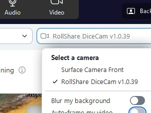

Once RollShare is installed and running, you need to tell your video call app (Zoom, Teams, Google Meet, etc.) to use the RollShare DiceCam virtual camera instead of your regular webcam.
How to select it
Open your video call app's camera settings — usually found in Settings → Video or in the camera dropdown during a call — and choose RollShare DiceCam from the list.

Select RollShare DiceCam from the camera list in your call app.
Don't see RollShare DiceCam? Make sure the RollShare app is running before opening your call app. Some apps (like Zoom) only detect new cameras at startup — try restarting the call app after launching RollShare.
You're all set! Your call app will now show your dice tray feed. Point your phone camera at your dice, and the roll results will appear as an overlay for everyone in the call.